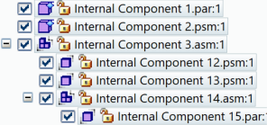

Create Internal Component command
In an assembly document, you can use the Create Internal Component command to design a multibody part, sheet metal, or subassembly component as an internal component, instead of an external part. The internal component exists only in the assembly, unless you choose to publish it to disk. Internal components can be used as a self-contained representation of a purchased or supplier part with which your Solid Edge model needs to interact.
Each internal component appears as a single entry in the Assembly PathFinder, unless you choose to create an assembly internal component (a subassembly), which creates a group of internal components to provide visual structure within the assembly.
-
When viewing the top level of the assembly document, the Create Internal Component command is located on the Create Part In-Place list. Select the command from this location when you want to define a part or sheet metal internal component in the assembly document.
-
The command is also located on the Home tab→Components group in assembly modeling. Select the command from this location when you want to define a subassembly structure for an assembly internal component.
Example:
For more information, see Create an internal component in an assembly.
How do I
Create an internal component in an assemblyApply a material to internal components
Publish internal components
Learn more
Working with internal componentsPublishing internal components
Look up more details
Create Internal Component Options dialog boxCreate Internal Component command bar
Activate Internal Component command
Publish Internal Components command
Publish Internal Components dialog box